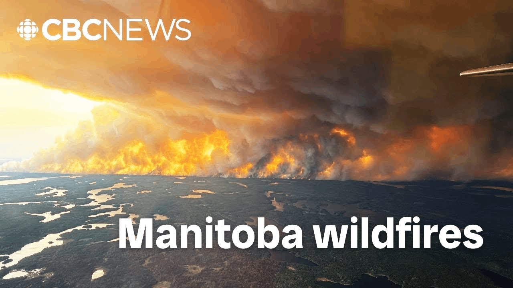

【马尼托巴省弗林弗伦等地上千居民因野火被迫撤离】
Summary: The situation in Manitoba is dire, with over 20 uncontrolled wildfires forcing mass evacuations, including the entire town of Flin Flon. Residents like Noel Deremy and reporter Eric West Haver share their evacuation experiences, while officials struggle to house displaced individuals. Firefighting efforts are ongoing, with concerns about wind direction impacting the blaze's path.
摘要： 马尼托巴省形势严峻，20多处失控野火引发大规模疏散，包括弗林弗伦全镇撤离。居民诺埃尔·德雷米和记者埃里克·韦斯特·哈弗讲述疏散经历，官员正竭力安置流离失所者。灭火工作持续进行，风向变化可能影响火势蔓延。

⏱️ Estimated Reading Time: 12 min
Let's jump back to Manitoba, which was really our focal point yesterday.
让我们回到马尼托巴省，这里正是我们昨天关注的焦点。
The first province to declare a provincewide state of emergency.
这是首个宣布全省进入紧急状态的省份。
We know there are more than 20 fires burning across the province.
目前全省有超过20处野火正在燃烧。
Many of them are out of out of control and that includes the fire that has forced the evacuation of all of Flintflon, Manitoba.
多数火势失控，其中包括迫使马尼托巴省弗林弗伦全镇疏散的火灾。
It's a very scary situation for lots of us.
这对我们许多人来说非常可怕。
So, we all have a different story.
我们每个人都有不同的经历。
We're all taking different paths and we're just trying to stay positive.
我们选择不同撤离路线，但都努力保持积极心态。
That is Noel Deremy.
这位是诺埃尔·德雷米。
She and her family among those who had to flee the community.
她和家人属于被迫撤离社区的群体。
Deremy says they drove more than 5 hours south and are now staying with friends.
德雷米表示他们向南行驶五个多小时，目前暂住朋友家。
More than 17,000 people are out of their homes in Manitoba.
马尼托巴省超1.7万人流离失所。
The premier, Wob Cano, says finding places for everyone to go is a challenge.
省长沃布·卡诺称安置所有疏散人员面临挑战。
I want to introduce you now to somebody who has had to evacuate and work at the same time because he's a reporter for the Fllynflon reminder, but at the same time a citizen of the community and he's had to evacuate along with all 5,000 of his Fllynflon uh fellow citizens.
现在我要介绍一位既要撤离又要工作的记者，他来自《弗林弗伦提醒报》，同时也是当地市民，与5000名同胞共同撤离。
He is Eric West Haver and he is in Swan River, Manitoba.
他是埃里克·韦斯特·哈弗，现处马尼托巴省天鹅河市。
Eric, I'm glad to meet you here.
埃里克，很高兴见到你。
Thank you for giving us some time.
感谢抽空接受采访。
Thanks for having me.
谢谢邀请。
I appreciate it.
非常感谢。
Eric, how far is Swan River from Flintflon?
埃里克，天鹅河市距弗林弗伦多远？
I'm not sure the the distance you would have had to go.
我不确定具体撤离距离。
Um, it's about 4 hours by Highway Drive.
驾车经高速公路约4小时。
A little bit le a little bit more this time because of the traffic coming out, but uh you know I'm safe, my family's safe, a lot of my most of my friends are safe and we can all be happy about that.
这次因撤离车流耗时稍长，但我和家人、多数朋友都安全抵达，值得庆幸。
That is uh really something very much to be thankful for.
这确实值得感恩。
I I I'm going to talk about the the reporter questions in just a second, but since we've already jumped to evacuation, what was it like getting out to safety when the order went out for everybody in Flynn Fla to leave?
稍后再问记者工作，先谈谈全镇疏散令下达时的撤离情况？
Um, a a bit of chaos.
有些混乱。
It wasn't unexpected because there was a pre-evacuation alert set the day before.
因前日已发布预备警报，尚在预期内。
So, most people I know, myself included, my family members included, we we packed our bags just to be on the safe side.
包括我和家人在内，多数人都提前打包行李以防万一。
We've been through forest fire fighting before and we've been through these situations before, but we've never had to actually evacuate.
我们经历过森林火灾，但从未实际疏散过。
Um, last summer there was a fire near Flintflon that caused a similar sort of alert.
去年夏季弗林弗伦附近火灾也引发过类似警报。
So, we packed bags, but kind of like not necessarily as seriously as we should have taken it quite frankly.
当时打包行李但未足够重视。
But when the alert came it was go time.
这次警报就是行动信号。
We had to get out as quickly as possible and no dillydallying, no messing around.
必须立即撤离，不容耽搁。
Um before we left, the mayor of Flintflon, George Fontaine, did a radio piece where he asked people specifically to not mess around and nobody on their way out of Flintflon did.
出发前，乔治·方丹市长通过广播明确要求居民严肃对待，撤离过程井然有序。
So it it went about as smoothly as it could have.
整个过程尽可能顺利。
That's wonderful.
这很棒。
The mayor is going to join me a little bit later on this morning, but I am glad to have time with you uh and very glad to hear you made it to your destination safely.
市长稍后将接受采访，很高兴你现在安全抵达。
We will hope for good things for the community.
祈愿社区平安。
Um, the reminder publishes weekly in the middle of doing, you know, of getting to your own personal safety.
《提醒报》每周发行，你在确保自身安全同时。
You're trying to think about keeping everybody up to date in the community.
仍坚持为社区提供最新信息。
Not able to publish hard copies, but doing a fantastic job online.
虽无法发行印刷版，但线上报道出色。
I was just looking 10:30 last night.
昨晚10:30还在更新。
You were updating in local times.
你按当地时间持续更新。
So, there's lots of new information that you have.
掌握大量最新信息。
As far as the status of the fire, how big, how close, what's the latest information, Eric?
关于火情现状——规模、距离等最新情况？
um how how close and how big it sort of depends on what monitoring service that you use to look at this.
距离和规模取决于所用监测系统。
So when you're dealing with a fire that crosses both Manitoba and Saskatchewan, both provinces have their own monitoring systems.
这场火灾横跨两省，各省有独立监测系统。
Both provinces have their own online maps to kind of show what the fire size is and where it's at.
各省在线地图显示不同火情数据。
The Manitoba one says something.
马尼托巴省数据显示一种情况。
The Saskatchewan one sometimes says something else.
萨斯喀彻温省数据有时不同。
And then you have the natural resources Canada map, a third one which also sometimes says something else.
加拿大自然资源部地图作为第三方数据源又有所不同。
And then you have the NASA and firms map and sometimes that also says something else.
NASA卫星地图偶尔也呈现差异。
You have four different maps and sometimes the data doesn't already match.
四套系统数据时有出入。
Um because it's an unpredictable situation, right?
毕竟火势难以预测。
Fires are not always easy.
火灾从来不易应对。
I mean, they're never easy to deal with, but they're not always easy to predict.
不仅难应对，更难预测。
And sometimes coordinates don't get entered quickly.
坐标更新可能存在延迟。
It's it's a fluid situation.
这是动态变化的情势。
Things sometimes go wrong.
偶发意外。
Um, as best as we can tell right now, the fire is, depending on what number you want to go to, between 30 and 40,000 hectares.
目前火灾面积约3-4万公顷。
And it's been, as best as we can tell from yesterday and from the latest updates I've got, it's been pushed away from the community.
根据昨日和最新消息，火势正被逼离社区。
It hasn't crossed the road that goes between where the fire is and the community, the perimeter highway, as we call it, not the one in Winnipeg.
尚未越过隔离火场与社区的环城公路。
It's a little bit smaller, but it is able to be kind of kept away.
这条公路规模较小，但有效阻隔火势。
It hasn't crossed that.
火势未越过该线。
And as best as we can tell right now, it hasn't claimed any structures in Flintflon.
目前弗林弗伦尚无建筑损毁。
That was uh some good news.
这是好消息。
I was reading.
我注意到。
Yes.
是的。
In detail in your latest online piece.
你最新报道中有详细说明。
And the firefighting operation continues.
灭火行动仍在继续。
Just give us an idea of the size and scope of that right now, Eric.
请介绍当前灭火行动的规模和范围。
Um this began started off with local firefighters trying to battle the blaze.
最初由当地消防员投入灭火。
Um, it started somewhere around the Kraton landfill.
火源位于克雷顿垃圾填埋场附近。
Um, depending on what I've heard, it's either started inside the landfill or near it.
据闻起火点可能在填埋场内部或周边。
Origin kind of not really relevant because of how big it's grown, but it started out with local forest fires.
火源已不重要，因火势已扩大，最初由当地消防员应对。
It start or forest fire fighters.
起初是当地森林消防员。
It started out with um members of the SPSA, Saskatchewan Public Safety Agency, and with the Mant Wild Service or Wildfire Service fighting it.
随后萨斯喀彻温公共安全局和马尼托巴野火服务局加入。
And it's grown now to include other firefighters from different jurisdictions coming in.
现已有其他辖区消防员增援。
There are some people who came in from southern Manitoba.
包括马尼托巴南部人员。
There are some people who came in from Swan River where I'm currently located.
我所在的天鹅河市也有支援力量。
And there has been a big ground swell of people trying to help.
涌现大量援助力量。
It's been a a rush to the north.
各方驰援北部。
While we were trying to evacuate the area, trying to get out, we were seeing vehicles coming the other way.
我们撤离时目睹逆向行驶的救援车辆。
fire trucks occasionally, RCMP vehicles going the other way.
消防车和皇家骑警车辆逆向行进。
And from what I can gather, it's been a pretty constant increase of people coming in from different communities.
各地支援力量持续增加。
Carberries, Carberry, Manitoba has been one of them.
包括马尼托巴省卡伯里等社区。
Um, and several others that I'm sure I could name if I could remember.
还有其他许多我一时记不清的社区。
It's a long list.
名单很长。
But the amount of work that's going into fighting this as a Flynn Floner, it's inspiring to see.
作为弗林弗伦居民，这些救援努力令人振奋。
As somebody with a home and a life set up in Flintflon, it's inspiring to see.
作为当地居民深受鼓舞。
And I hope I hope they can do what they can to get this as safe as possible as soon as possible.
希望救援人员尽快控制火情。
As you say, so far, thankfully, it hasn't crossed that perimeter highway, hasn't moved into the community yet.
如你所言，所幸火势未越过环城公路。
What are the areas of particular concern that you're watching today that you think you might be reporting on?
你特别关注哪些可能需报道的隐患区域？
any any particular uh changes or anything that you're you're keeping attention on?
是否有需特别留意的变化？
Uh it all depends on the wind because right now the area of Flintflon and around Flintflon, it is tinder dry.
关键在于风向，当前弗林弗伦及周边极度干燥。
You know, anyone in Flintflon who tried to mow a lawn in the last couple of weeks will know you tried to mow your grass, it's dust.
最近修剪草坪会扬起尘土。
It is frightening and how dry it is.
干旱程度惊人。
There's maybe been one rain since the snow uh melted and it's been kind of worrying to see how fast it spreads.
融雪后仅降过一次雨，火势蔓延速度令人忧心。
I'm looking right now at where the wind goes because for the last couple days the wind has blown this fire towards the north and to the northeast.
近日风将火势吹向东北方向。
That means taking it away from Flintflon.
使火场远离弗林弗伦。
If the wind changes, who knows what comes next.
若风向改变，后果难料。
I wish I had a crystal ball and I could tell you what this fire would do next.
但愿能预知火势走向。
it would made my job easier and probably help the guys on the ground.
这能简化我的工作并协助前线人员。
But what I'm looking looking for is that wind and seeing whether or not it changes, what direction it changes to, and how that develops over the course of the day.
我正密切观察风向变化及全天发展趋势。
Okay, I'll be following online.
我会持续关注线上报道。
I'd urge others to as well.
也建议大家这样做。
Some great reporting there.
你的报道非常出色。
And Eric, thank you for the time today.
感谢你今天的分享。
Glad to know you and your family are safe.
很高兴你和家人平安。
The evacuation has gone well as you observed it and we'll hope for uh the wind continuing to blow away from Flintfon, Manitoba.
如你所见撤离顺利，祈愿风向持续有利。
Thank you, Eric West Haver.
谢谢埃里克·韦斯特·哈弗。
Thank you very much.
非常感谢。